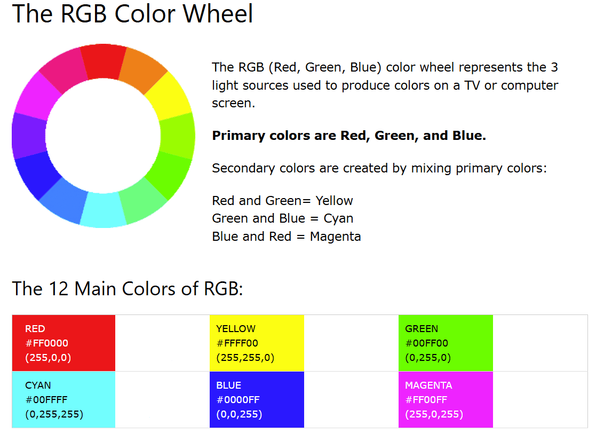

For any equilateral polygon, an additional amount of polygons (1 less than the amount of points/sides it has) can be created from the x y coordinates of the points of the original polygon. This can be seen in the first image, where the original polygon is an equilateral triangle and the x and y values are graphed, intersecting with each point of each plotted triangle, or viewed in this desmos. When the original polygon is rotated, the additional polygons are set in motion as well, and appear to rotate in separate three dimensional planes. For its simplicity, this effect appears quite complex at a glance, which makes this quite appealing from a programming standpoint. This is due in part to a seemingly complex result arising from an easily iterable and relatively non-computationally intensive process, or in other words, easy work cool result.

The colors for the background drawings are generated using a conditional statement that iterates through values from 0 to 255 by increments of 5 for the r, g, and b values respectively. The maximum sum of the r, g, and b is 510, peaking only when 2 of the aforementioned variables are both 255. Out of necessity, the conditions also force at least one of the r, g, and b values to be zeroed out until another value zeroes out. This creates a circular flow in the values, allowing the full visible spectrum to be covered. This ultimately yields another layer to how visually appealing the drawing is, or in other words, adds to how cool this looks.